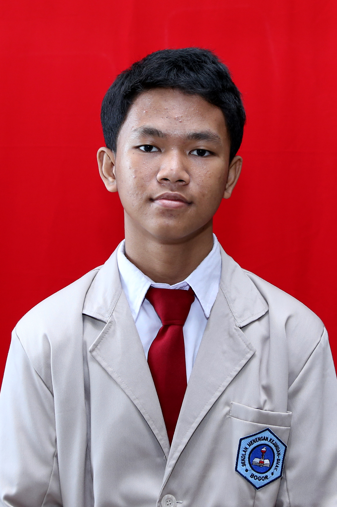

| Nama Lengkap | Muhammad Fauzan Ramadhan |
| Nama Panggilan | Ojan |
| Tempat, Tanggal Lahir | jakarta, 17 Oktober 2004 |
| Umur | 16 tahun |
| Hobi | Tidur |
| Cita-Cita | Engineer |
| Status | Pelajar |
| Asal Sekolah | SMK-SMAK Bogor |
Pembelajaran jarak jauh selama pandemi COVID-19 terhitung sudah berjalan satu tahun lebih. Banyak kekurangan dan kelebihan dari pembelajaran jarak jauh. Kelebihannya adalah dapat membuatku lebih terampil dalam menggunakan teknologi, karena pembelajaran jarak jauh menggunakan moda daring. Tetapi menurutku lebih banyak kekurangan daripada kelebihannya, antara lain seperti terbatasnya akses internet, tidak semua murid mampu untuk memiliki akses internet yang baik, sehingga dapat mengakibatkan terhalangnya pembelajaran baik itu melalui meeting atau menjadi terlambat dalam mengumpulkan tugas. Aku juga tidak dapat bertemu teman secara langsung, oleh karena itu menurutku pembelajaran jarak jauh sangatlah membosankan
Selain itu kendala terbesar bagi sekolah vokasi adalah pembelajaran praktik menjadi kurang efektif, karena murid tidak dapat melakukan praktik secara langsung melainkan hanya mendapat penjelasan berupa video dari guru yang bersangkutan. Dan menurutku beban sekolah karena pjj menjadi lebih berat, tugas yang diberikan lebih banyak sementara jadwal semakin padat, bahkan di akhir minggu. Tetapi alhamdulillah aku bersyukur, akhirnya pembelajaran tatap muka dapat dijalankan walaupun dengan jumlah yang terbatas. Sehingga karena diberlakukannya sistem blok, menurutku pembelajaran menjadi lebih efektif. Semoga aku bisa terus semangat dalam menjalani pembelajaran walaupun dalam kondisi pandemi seperti ini, Aamiin.